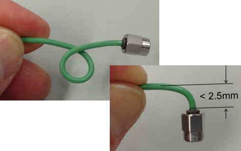

Alternative cables for the high-density Port Scale RF solution
For very high-density Port Scale RF solution requirements you may want to consider microbend® cables provided by HUBER+SUHNER Astrolab, Inc..
The microbend® cables have a minimum inner bending radius of 1.5 mm (60 mil). As they Do not have strain reliefs, they allow immediate sharp turns close to the connector. Thus they are ideally suited for extremely limited routing space. The graphic shows an example microbend® cable with an SMA connector to visualize the bending capabilities.
microbend® is a registered trademark of HUBER+SUHNER Astrolab, Inc.

The Port Scale RF solution supports the following cables:
Desscription |
Huber+Suhner Astrolab Part Number |
|---|---|
SMP-m to SMP-f (8-inch straight) |
E5150-61607 |
SMP-m to 90º SMP-f (8-inch right angle) |
E5150-61617 |
Functional changes
- Introduced in SmarTest 7.3.1